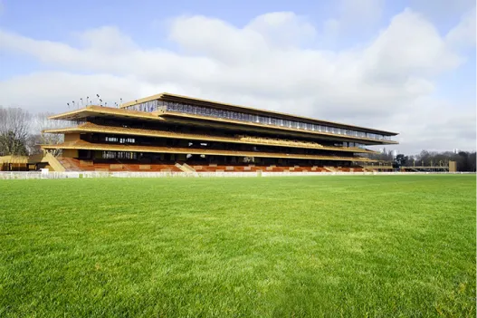

L’Hippodrome de Lonchamps
L'Hippodrome de Longchamp, réinventé par Dominique Perrault, est bien plus qu'un lieu de courses équestres. Niché dans un écrin de verdure, ce site emblématique à l'ouest de Paris offre une expérience unique mêlant sport, nature et élégance architecturale. Depuis sa rénovation, l'hippodrome propose des infrastructures modernes et accueillantes, tout en préservant l'essence de son histoire équestre séculaire. Avec ses tribunes élancées offrant une vue imprenable sur les courses, Longchamp demeure un lieu où la passion pour les courses hippiques rencontre le charme intemporel de son architecture contemporaine.